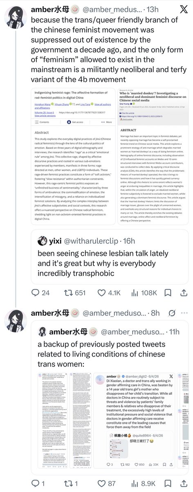
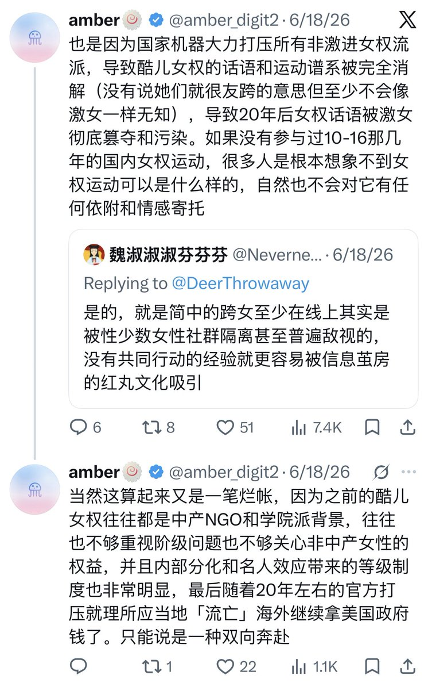

不知道图三这位是哪来的脸提什么完整性的。一方面激女就是从20年兴起的，21年很多我关注的豆瓣激女小组就已经遭到了封杀，我在公众号上还发过对她们的纪念推文，且22年铁链女事件正是一名叫乌衣古城的激女（而不是你热爱的酷儿女权）真的去线下尝试营救小花梅并遭遇了警察镇压；搞笑的是现在的激女也不提她了，好像只有我记得她。另一方面我之前发过那么多遍对本地酷儿女权的镇压导致了反跨女权的兴起，你把我的原话复读一遍就好像在说什么禁断的我没发现的真理了，你不丢人吗




「当amber被指控与国家主义粉红共谋的那一天，她一定会回想起写作《对本次疫情的结构性反思》的那个下午。」我确实没想到这句关于CIA的玩笑话都能被拿来挑刺，看来这说明我那篇长文确实是写得不错，那我现在正面回应一下。 https://t.co/nC2RKpFttb https://t.co/wlJbnIt6s4